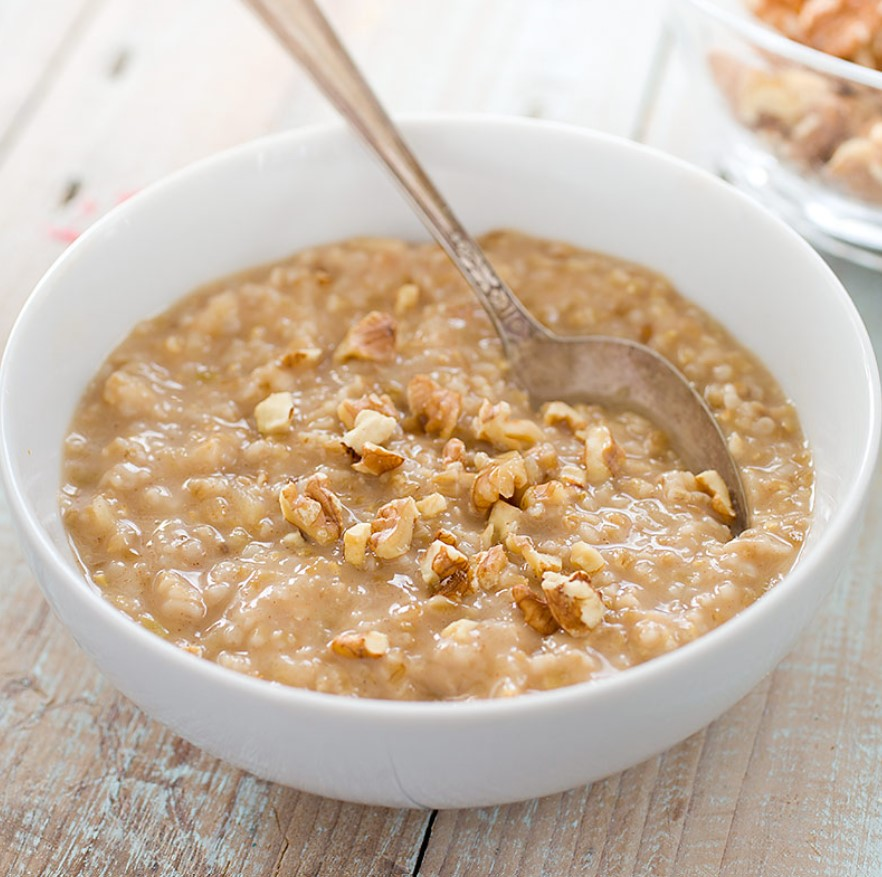

Oatmeal

Tasty Oatmeal
Ingredients
- Oatmeal
- Oatmeal Water
- Apple
- Cinnamon
- Applesauce
- Walnuts pieces
- Cottage Cheese
Directions
- Cut up apple into pieces.
- Put apple in medium pyrex bowl and sprinkle with Cinnamon.
- Put a handful of walnut pieces in the bowl.
- Put 1/2 cup of oatmeal in the bowl.
- Pour 3/4 cup of oatmeal water in the bowl.
- Measure 1/2 cup applesauce and place in bowl.
- Microwave mixture for 3 minutes.
- Spoon 1/2 cup of cottage cheese on top of oatmeal.